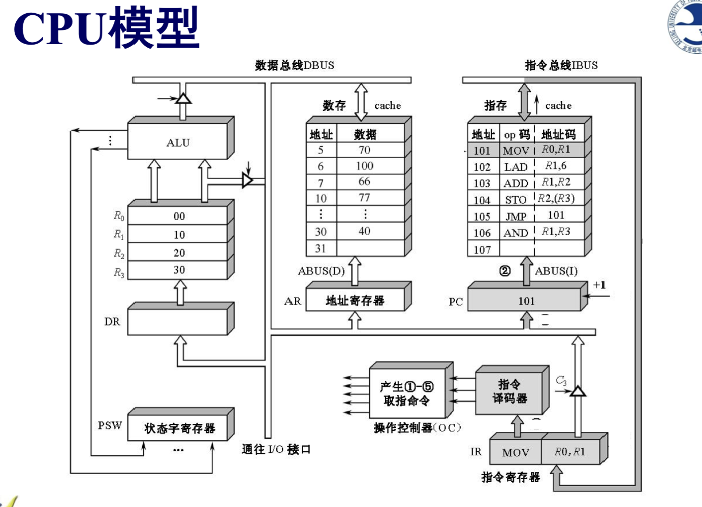
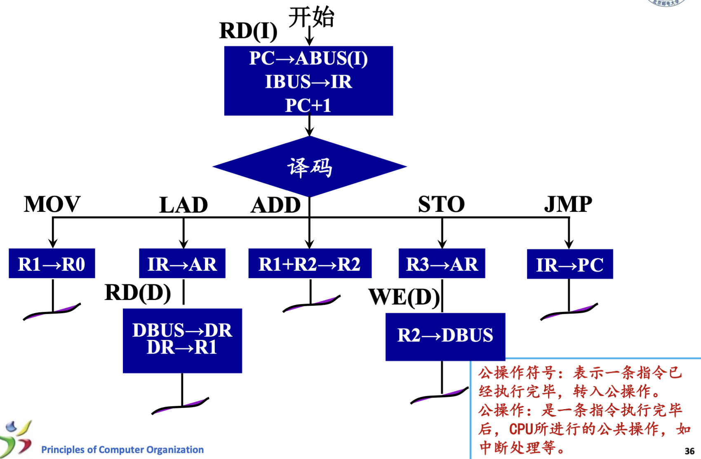
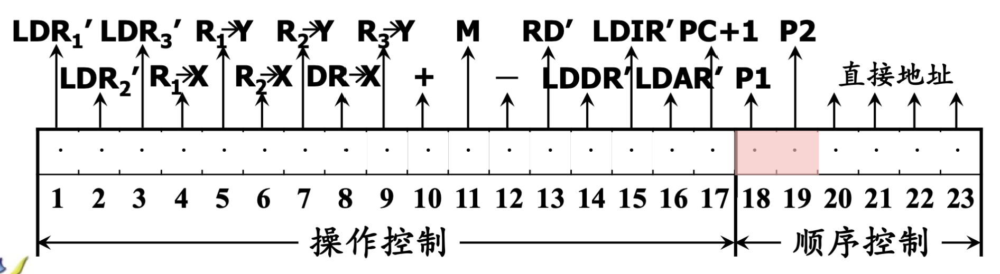
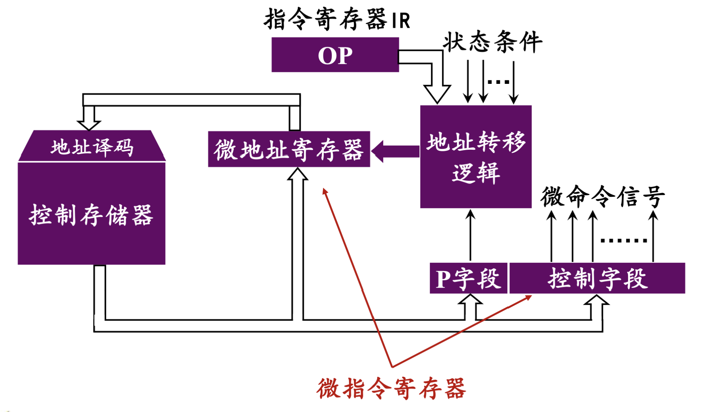
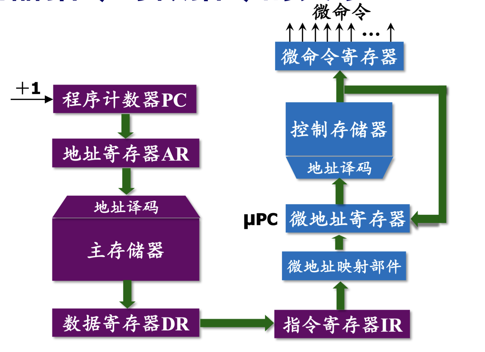
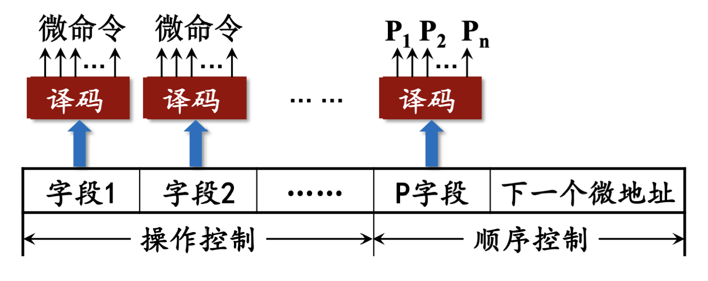

处理器功能
- 指令控制：控制程序严格按照规定顺序执行；
- 操作控制：处理器根据从内存取出的每条指令产生相应的操作信号，送往相应的部件，控制这些部件按指令的要求进行动作；
- 时间控制：对各种操作实施时间进行控制；
- 数据加工；
- 中断处理；
CPU模型及其组成

CPU组成部分如下：
- 控制器：从指令cache中读取当前指令，并指出下一条指令在指令cache中的位置；对指令进行译码，产生操作控制信号；指挥并控制CPU、内存和IO设备之间的数据流动；
- 程序计数器PC；
- 保存将要执行的下一条指令的地址；
- 指令寄存器IR；
- 保存当前正在执行的一条指令；
- 保存的操作码字段就是指令译码器的输入；
- 指令译码器；
- 操作控制器OC；
- 根据指令的操作码和时序性好，产生各种操作的控制信号；
- 根据设计方法不同可分为：
- 硬布线控制器：采用时序逻辑；
- 微程序控制器：采用存储逻辑；
- 时序产生器；
- 对各种操作信号进行执行时间先后顺序控制；
- 程序计数器PC；
- 运算器：对数据进行加工处理，是执行部件，执行所有算术运算、逻辑运算和测试运算；
- 算数逻辑单元ALU；
- 累加寄存器；
- 数据缓冲寄存器DR；
- 用来暂存从数据cache中读出的或来自外部接口的一个数据字，或ALU 的运算结果；
- 从图上就可以看出，它是ALU运算结果和通用寄存器组之间的缓冲；
- 用来补偿CPU、内存和外设在操作速度上的差异；
- 程序状态字寄存器PSWR；
- 保存运算结果标志，比如进位标志、零标志、溢出标志、负标志；
- 保存中断和系统工作状态等信息；
- 其他主要寄存器：
- 地址寄存器AR；
- 存放处理器当前访问的数据cache中数据单元的地址；
- 通用寄存器R0 ～ R3；
- 暂存ALU的运算结果；
- 地址寄存器AR；
- 数据通路：寄存器之间、寄存器与ALU之间传送数据通路的总称；
指令周期
执行程序
在冯诺依曼结构，即存储程序式计算机中，在程序运行之前，需要将程序和数据均放到内存中，具体执行程序的顺序如下：
- 将程序首地址送入程序计数器PC；
- 从内存(cache)中取出该指令并执行；
- 形成下一条待执行指令的地址，保存到PC中；
- 自动连续执行指令，直至最后一条指令；
即一个取指令 + 执行指令的过程；
指令周期
指令周期就是取指令 + 分析指令 + 执行指令所需的总时间；
显然，由于各种指令的执行时间是不同的，所以各种指令的指令周期也不相同；
一个指令周期包含若干个CPU周期；
CPU周期 / 机器周期
CPU周期又称机器周期，一个机器周期又包含若干个时钟周期；
时钟周期；
时钟周期是处理操作的基本单位，也称节拍脉冲；
指令的执行步骤
MOV指令
MOV指令作用是数据传送，属于RR型指令，假设指令为
MOV R1 R0 ，执行过程如下：
- 取指令（1个CPU周期）
- 从内存(cache)中取出当前MOV指令；
- PC += 1，为取下一条指令作准备；
- 指令译码/测试；
- 执行指令（1个CPU周期）
- 读取寄存器R0中的数；
- 通过ALU以及三态门读到数据总线DBUS上；
- 将取出来的数写入数据缓冲寄存器DR；
- 将数据缓冲寄存器DR中的数写入寄存器R1；
MOV指令周期 = 2个CPU周期；
LAD指令
LAD指令作用是从内存上加载数据到寄存器中，属于RS型指令，假设指令为
LAD R1 A ，执行过程如下：
- 取指令（1个CPU周期）
- 从内存(cache)中取出当前MOV指令；
- PC += 1，为取下一条指令作准备；
- 指令译码/测试；
- 执行指令
- 送操作数地址（1个CPU周期）
- 操作数的直接地址即为 A，将其装入地址寄存器AR；
- 取出操作数，装入通用寄存器（1个CPU周期）
- 从数据存储器中读出 A 地址上的数，发送至数据总线；
- 将取出来的操作数写入数据缓冲寄存器DR；
- 将数据缓冲寄存器DR中的数写入寄存器R1；
- 送操作数地址（1个CPU周期）
LAD指令周期 = 3个CPU周期；
ADD指令
ADD指令属于RR型指令，假设指令为 ADD R1 R2
，执行过程如下：
- 取指令（1个CPU周期）
- 从内存(cache)中取出当前MOV指令；
- PC += 1，为取下一条指令作准备；
- 指令译码/测试；
- 执行指令（1个CPU周期）
- 读取寄存器R1和R2上的数；
- 通过ALU执行加法运算，结果通过三态门发送至数据总线；
- 将运算结果暂存至数据缓冲寄存器DR；
- 将数据缓冲寄存器DR暂存的运算结果写入寄存器R1；
ADD指令 = 2个CPU周期；
STO指令
STO指令的作用是将寄存器中的数写入内存，属于RS型指令，假设指令为
STO R2(R3) ，执行过程如下：
- 取指令（1个CPU周期）
- 从内存(cache)中取出当前MOV指令；
- PC += 1，为取下一条指令作准备；
- 指令译码/测试；
- 执行指令
- 送操作数地址（1个CPU周期）
- 从寄存器R3中取出操作数的直接地址，将其装入地址寄存器AR；
- 送操作数地址，执行写操作（1个CPU周期）
- 从寄存器R2中的数读出，发送到数据总线上；
- 发出写命令，将数据总线上的的数写入地址寄存器AR对应的地址单元；
- 送操作数地址（1个CPU周期）
STO指令 = 3个CPU周期；
JMP指令
JMP指令是无条件转移指令，假设指令为 JMP A
，执行过程如下：
- 取指令（1个CPU周期）
- 从内存(cache)中取出当前MOV指令；
- PC += 1，为取下一条指令作准备；
- 指令译码/测试；
- 执行指令（1个CPU周期）
- 转移地址即为A，将转移地址A送往程序计数器PC；
JMP指令 = 2个CPU周期；
执行步骤总结
- 读取指令（1次访存）；（公共操作）
- 分析指令；
- 执行指令：不同指令操作步骤不同；
- 检查有无中断请求；（公共操作）
方框图表示如下，其中1个方框代表1个CPU周期；
时序产生器和控制方式
控制器分类
- 硬布线控制器：时序信号一般采用 主状态周期 —— 节拍电位 —— 节拍脉冲 的三级体制，节拍电位 = CPU周期时间；
- 微程序控制器：时序信号较简单，采用 节拍电位 ——
节拍脉冲 的二级体制；
- 组成包括：
- 时钟源；
- 环形脉冲发生器；
- 节拍脉冲和读写时序译码；
- 启停控制逻辑；
- 组成包括：
控制方式
- 同步控制：执行各指令所需的机器周期数和时钟周期数固定不变；
- 异步控制：
- 每条指令和操作控制信号按需占用时间；
- 每条指令的指令周期可以由多个不等长的机器周期构成；
- 联合控制；
微程序控制器
与硬布线控制器对比
- 微程序控制器按照软件设计的思想设计硬件；
- 相较于硬布线控制器，具有规整性、灵活性、可维护性等优点；
基本概念
- 微命令：控制部件通过控制线向执行部件发出的各种控制信号；
- 微操作：执行部件接收到微命令后执行的的特定操作；
- 相容性操作：同时在一个CPU周期内可以并行的操作；
- 相斥性操作：不能同时在一个CPU周期内并行的操作；
- 反馈信息：执行部件使用反馈线向控制部件报告操作情况，控制部件根据反馈信息发出新的微命令；
- 微指令：在一个CPU周期内，实现某个操作功能的一组微命令构成了微指令。
- 即，用一条微指令对应一个机器指令的一个执行步骤；
- 微指令需要提供：
- 执行该步骤所需的控制信号；
- 提供下一条需要执行的微指令的地址；
- 微程序：一条机器指令对应一段微程序，微程序即实现一条机器指令所需的多条微指令序列；
微指令的基本格式
微指令包括操作控制字段和顺序控制字段：
* 操作控制字段用于发出控制信号，每一位对应一个微命令；
* 顺序控制字段用于产生下一条微指令的地址；

微程序控制器原理

一个基本的原理框图如上图所示：
- 控制存储器：用来存放全部指令系统的微程序的只读存储器；
- 从控制存储器中读出一条微指令并执行的时间总和称为微指令周期；
- 微指令寄存器：用于存放由控制存储器读出的一条微指令；
- 微地址寄存器：用于决定将要访问的下一条微指令的地址；
- 地址转移逻辑：
- 正常情况下，由微指令的顺序控制字段直接给出下一条微指令的地址并存放在微地址寄存器中；
- 当微程序出现分支，则需要根据状态条件、指令寄存器IR等计算地址转移；
一个基本的执行过程如下：
- 执行“取指”指令，即取出指令，这是所有机器指令的共用微指令，所以一般存放在地址0000处；并且所有机器指令的最后一条微指令的直接地址都指向0000，用于取下一条指令；
- 进入 P1 测试，即操作码测试，产生对应的微程序入口指令，送入微地址寄存器；
- 该条微指令执行完毕后，进入 P2 测试，用于计算下一条微指令的地址，读取微指令，重复上述操作；
- 当微程序对应的所有微指令均被执行完后，返回到0000处，即取指微指令，用于执行下一段微程序；
机器指令与微指令的关系
注意区分程序与微程序、机器指令与微指令、地址与微地址的对应关系。前者与主存有关，而后者与控制存储器有关，如下图：

微程序设计
微命令编码
- 直接表示法：微指令的控制字段中每一位对应一个微命令（即控制信号）；
- 编码表示法：把一组相斥的微命令合并成一个小组，对应一个字段，通过小组译码器对微命令信号进行译码，译码输出作为控制信号。\(n\) 位二进制译码后可以表示 \(2^{n} - 1\)个微命令。比如3个互斥的微命令，原本需要3位，现在只需要合并为一个2位的字段，通过2:4译码器进行译码；如下图：

注：为什么用 \(n\) 位二进制可以表示 \(2^n - 1\)$ 个微命令，而不是 \(2^n\) 个？
注意编码表示法中用“全 0 码不表示任何有效微命令”，即全0表示无操作，所以剩下 \(2^n - 1\) 个微命令才是有效的；
- 混合表示法：更灵活；
产生后继地址的方法
- 计数器方式
- 与程序计数器PC类似：
- 顺序执行微指令时，下一条微指令的地址通过当前微地址 + 一个增量产生；
- 非顺序执行时需要通过一定的转移方式产生下一条微地址；
- 优点：
- 需要的顺序控制字段少；
- 缺点：
- 多路并行转移功能弱，速度慢、灵活性差；
- 多路转移方式
- 程序运行时：
- 不产生分支时：后继微地址直接由本条微地址的顺序控制字段给出；
- 产生分支时：根据本条微地址的顺序控制字段的P字段（即判别测试位）和状态条件位来从若干“候选”微地址中选择；
- 状态条件有 \(n\) 位 \(\Rightarrow\) 可以实现 \(2^n\) 路转移（即对应 \(2^n\) 个微程序入口） \(\Rightarrow\) 涉及微地址寄存器的 \(n\) 位（ \(n\) 位状态条件直接存入微地址寄存器，微地址寄存器的高位相当于”基地址“）；
- 优点：多路并行转移功能强， 速度快，更灵活；
- 缺点：多路转移需要复杂的组合逻辑；
微指令格式
- 水平型微指令：一次能定义并执行多个并行操作的微命令的微指令；
- 包含控制字段、判别测试字段（P字段）、下地址字段；
- 垂直型微指令：类似机器指令，通过设置微操作码字段规定微指令的功能，长度较短，但一条微指令只有 1 ～ 2 个微操作命令，实现一条机器指令对应的微程序需要的垂直型微指令更多；
两者对比：
* 水平型微指令并行操作能力强，灵活，效率高；
* 水平型微指令执行一条指令的用时较短；
* 水平型微指令组成的微程序微指令较长但微程序较短；
* 水平型微指令难以掌握，垂直型微指令容易掌握；